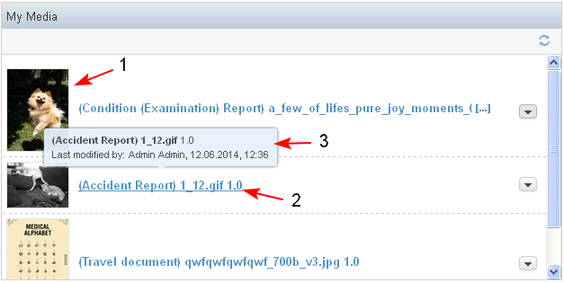
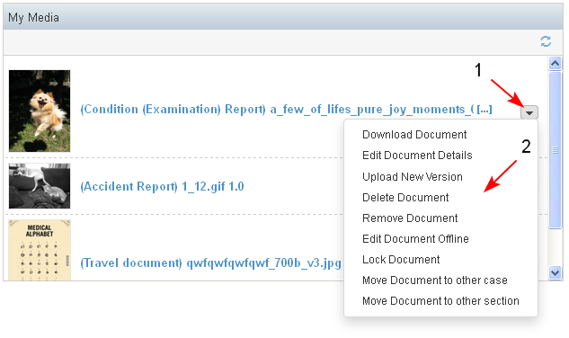

The dashlet is context dependent and shows different content on the different dashboards.
- In the Personal dashboard in the Media Dashlet are visible all the images created/ updated by the user and the images flagged as favorites.
- In the Project dashboard in the Media dashlet are visible all the images associated with the project.
- In the Case dashboard, in the Media dashlet are visible all images associated with the case.
- In the Media dashlet are visible only images of type jpg, tiff, png, gif, bmp.
The images are visible in thumbnail view (1) . For each image the image thumbnail and the title (2) are displayed.
The user could click on the title of an image and would be directed to the image landing page. For each image a tool tip (3) displays more information about: Title, Last Modified by, Modified on.

- Next to each image there is list of actions that could be performed on it (1-2). The actions depend on the user permissions. In general they include: Upload New Version, Edit offline, Move, Delete etc
